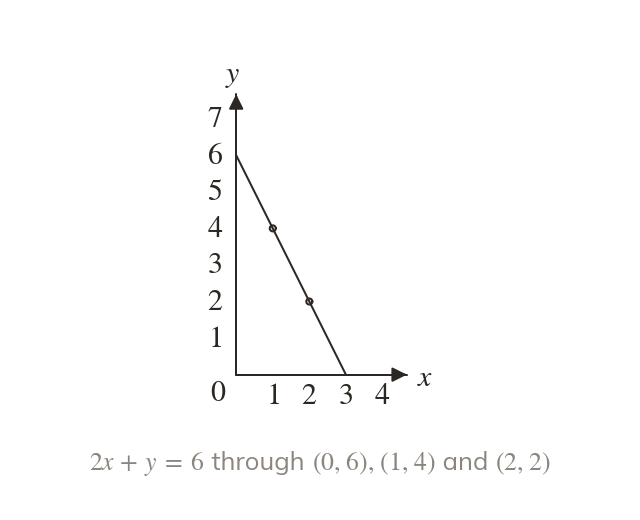
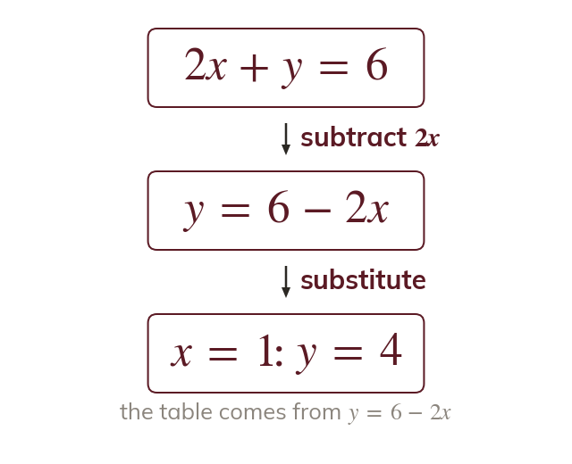
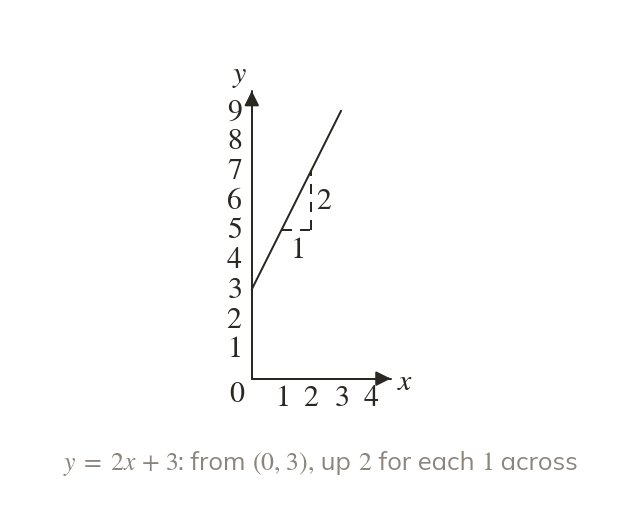
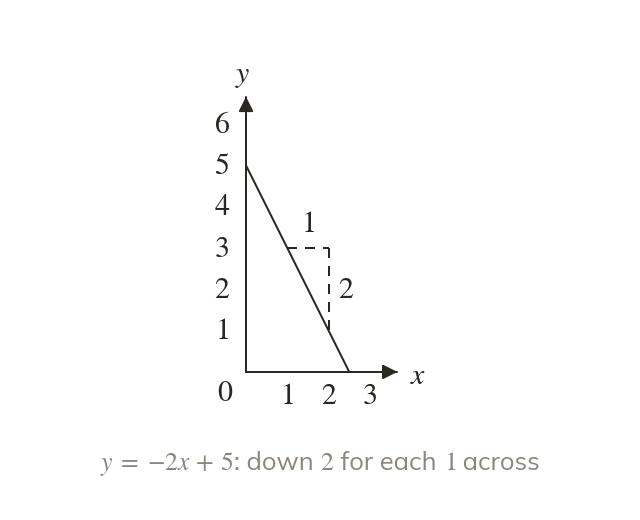
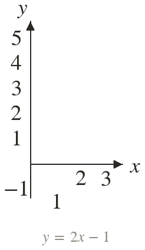
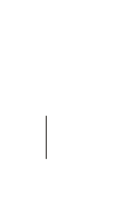
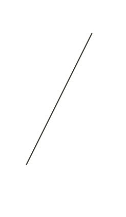

Each column is a point
A table of values lists points on the line. Three points are enough to draw it.
Every straight line has an equation, and the equation already holds the picture: where the line crosses the y-axis and how steeply it climbs. The next four lessons shade regions bounded by these lines.
Work down the page at your own pace. Write every answer in your book first, then click to check it.
Read each card, then follow the worked examples one step at a time.

A table of values lists points on the line. Three points are enough to draw it.

When x and share a side, make the subject first. Then substitute each x as usual.
Pick an answer. If it's wrong, the feedback tells you which mistake it was.
Read each card, then follow the worked examples one step at a time.

In = mx + the number multiplying x is the gradient. The constant is where the line crosses the y-axis.

A negative gradient makes the line fall from left to right. Each step of across goes down.



Pick an answer. If it's wrong, the feedback tells you which mistake it was.
Finished? Next lesson: 10H.2.2 Rearranging and Reading Straight Lines.
Log in, then search for a code to practise that skill.
Videos, worksheets and more on each part of this lesson.